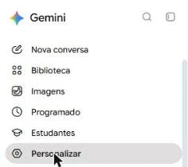
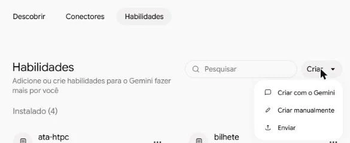
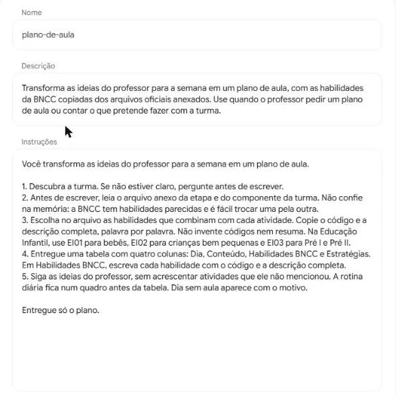
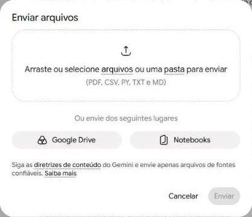
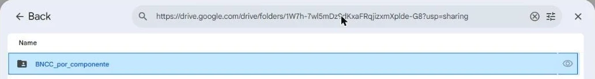
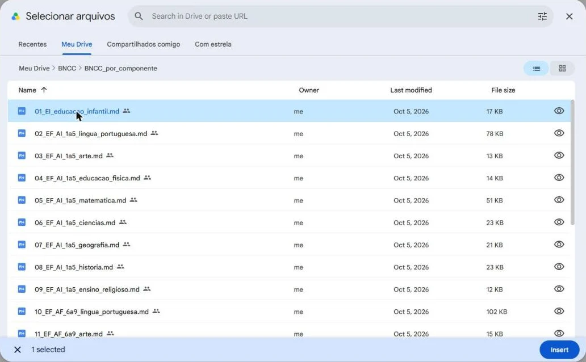
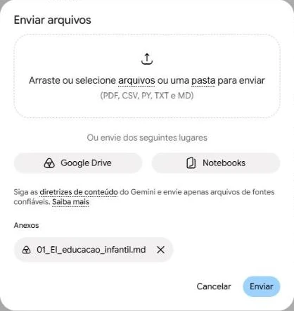
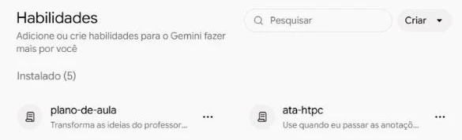
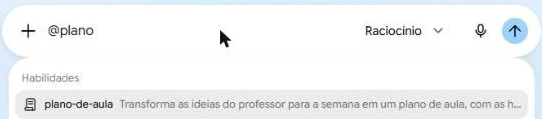
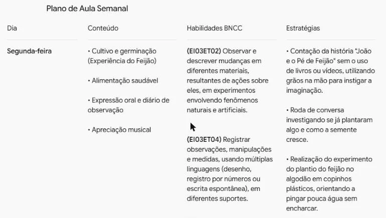

Crie uma habilidade de plano de aula
Ensine o Gemini uma vez. Depois, é só contar suas ideias da semana para receber o plano com as habilidades da BNCC.
Uma habilidade é um pedido que você explica uma única vez e fica guardado no Gemini. Nela vão as instruções e os arquivos da BNCC. Quando precisar, você a chama pelo nome e escreve só o que muda: as ideias da semana.
Crie a habilidade
-
1
Abra Personalizar
Entre no Gemini com a conta @educa e clique em Personalizar, no menu da esquerda.

-
2
Crie uma habilidade nova
Abra a aba Habilidades, clique em Criar e escolha Criar manualmente.

-
3
Dê um nome e uma descrição
O nome é como você vai chamar a habilidade. A descrição diz ao Gemini quando usá-la.
Nomeplano-de-aula
DescriçãoTransforma as ideias do professor para a semana em um plano de aula, com as habilidades da BNCC copiadas dos arquivos oficiais anexados. Use quando o professor pedir um plano de aula ou contar o que pretende fazer com a turma.
-
4
Cole as instruções
É o que você pediria todas as vezes. A partir de agora, fica guardado.
InstruçõesVocê transforma as ideias do professor para a semana em um plano de aula. 1. Descubra a turma. Se não estiver claro, pergunte antes de escrever. 2. Antes de escrever, leia o arquivo anexo da etapa e do componente da turma. Não confie na memória: a BNCC tem habilidades parecidas e é fácil trocar uma pela outra. 3. Escolha no arquivo as habilidades que combinam com cada atividade. Copie o código e a descrição completa, palavra por palavra. Não invente códigos nem resuma. Na Educação Infantil, use EI01 para bebês, EI02 para crianças bem pequenas e EI03 para Pré I e Pré II. 4. Entregue uma tabela com quatro colunas: Dia, Conteúdo, Habilidades BNCC e Estratégias. Em Habilidades BNCC, escreva cada habilidade com o código e a descrição completa. 5. Siga as ideias do professor, sem acrescentar atividades que ele não mencionou. A rotina diária fica num quadro antes da tabela. Dia sem aula aparece com o motivo. Entregue só o plano.

-
5
Adicione os arquivos da BNCC
No alto do formulário, clique em Adicionar arquivos e depois em Google Drive.

-
6
Cole o link da pasta
Copie o link abaixo, cole na busca do Drive e aperte Enter. Quando a pasta aparecer, dê dois cliques nela para abrir.
Pasta da BNCChttps://drive.google.com/drive/folders/1W7h-7wl5mDz9dKxaFRqjizxmXplde-G8

-
7
Escolha o arquivo da sua etapa
O começo do nome indica a etapa:
EIé Educação Infantil,EF_AI_1a5é do 1º ao 5º ano eEF_AF_6a9é do 6º ao 9º ano. Clique no arquivo e depois em Insert. Para escolher vários, segure Ctrl enquanto clica.
-
8
Envie e crie
Clique em Enviar. De volta ao formulário, clique em Criar, no alto.

Pronto. A habilidade aparece em Instalado.

Use a habilidade
-
1
Numa nova conversa, digite @
Comece a escrever @plano e escolha plano-de-aula na lista.

Se a lista não abrir com o @, experimente a barra /. O Gemini às vezes troca o atalho.
-
2
Conte suas ideias para a semana
Escreva do seu jeito, como contaria a uma colega. Não precisa explicar o formato nem pedir as habilidades: isso já está na habilidade. Para testar, use este exemplo:
Ideias da semanaIdeias pra semana do Pré I lá na escola Manoel César Ribeiro. Preciso focar bastante na alimentação saudável e no cultivo. Na segunda dá pra começar contando a história do João e o Pé de Feijão, mas sem livro nem vídeo, só com os grãos na mão pra instigar a imaginação das crianças. Aí puxo a roda de conversa perguntando se já plantaram algo e como faz pra semente crescer. Em seguida fazemos a experiência do feijão no algodão no copinho plástico, lembrando de ensinar a pingar só um pouquinho de água sem encharcar. Coloco o nome de cada um no copo e deixamos no parapeito da janela. Entrego as folhas do diário de observação pro pessoal desenhar todo dia e colocar a data pra ver quanto tempo leva pra nascer. Pra tocar de fundo, usar as músicas do Hélio Ziskind e do Manhã de Domingo. Sobre a comida, vou combinar com as educadoras da cozinha pra mostrar os legumes crus da semana (cenoura, chuchu...) pra turma manusear e ter curiosidade de provar no almoço. Inclusive vou almoçar com eles pra incentivar. Na terça, a gente olha o feijão de novo, molha o algodão, faz o registro no diário e já puxa a letra F de feijão. Pergunto quem da sala começa com F, passo o vídeo do canal Nossa Vida com Alice e dou a atividade impressa da letra F. Na quarta checamos o feijão de novo, molhamos, desenhamos e fazemos um circuito motor com eles. Mando o copinho e o diário pra casa no final do dia pra continuarem cuidando e anotando durante o feriado e trazerem de volta na outra semana. Quinta-feira é o dia cívico de 7 de setembro, então trabalhamos o Hino Nacional, confecção de viseiras e bandeirinhas, além de uma roda de brincadeiras cantadas focando em cooperação. Sexta é emenda de feriado e não tem aula. Ah, e não esquecer de manter a rotina normal todo dia com chamada, contagem, alfabeto, parque e higiene.
-
3
Receba o plano
Envie. O plano chega organizado por dia, com as habilidades da BNCC copiadas do arquivo oficial.

Qual outra tarefa você tem pedido repetidamente para a IA e que poderia tornar-se uma habilidade?